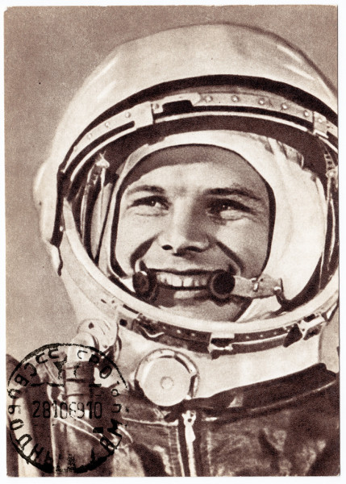
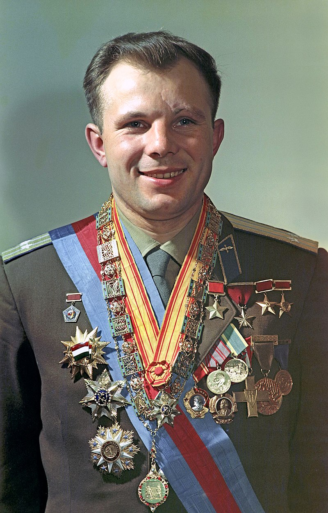

Юрий Гагарин
Юрий Алексеевич Гагарин (1934–1968 гг.) – русский летчик-космонавт, Герой Советского Союза, первый человек в мире, побывавший в космосе. День первого полета Гагарина в космос – 12 апреля – стал праздником – Днем космонавтики  